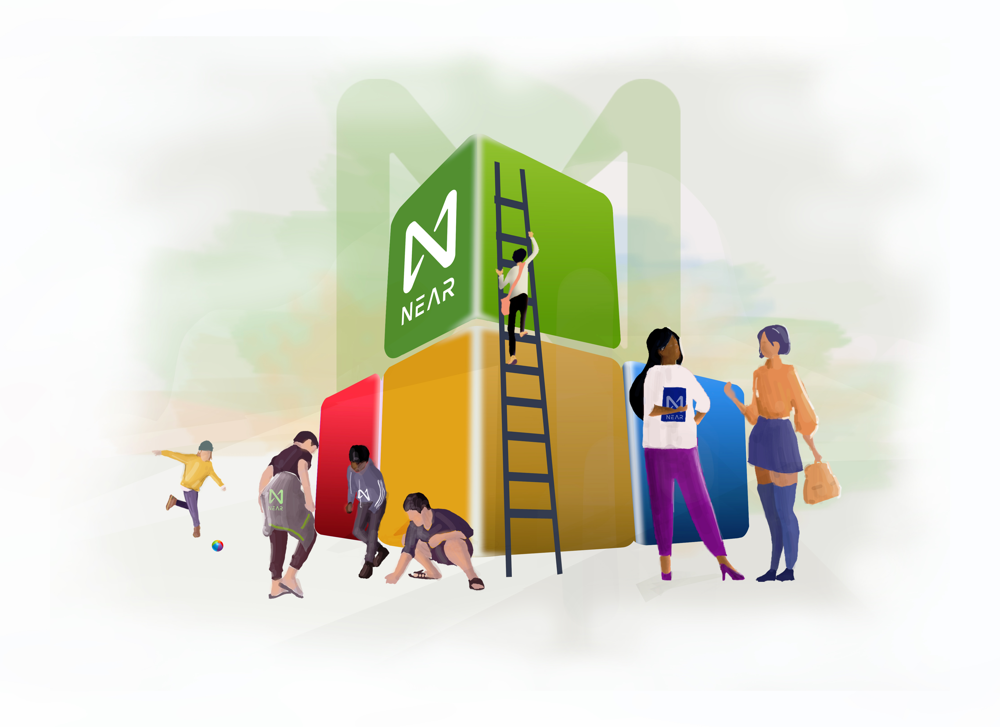
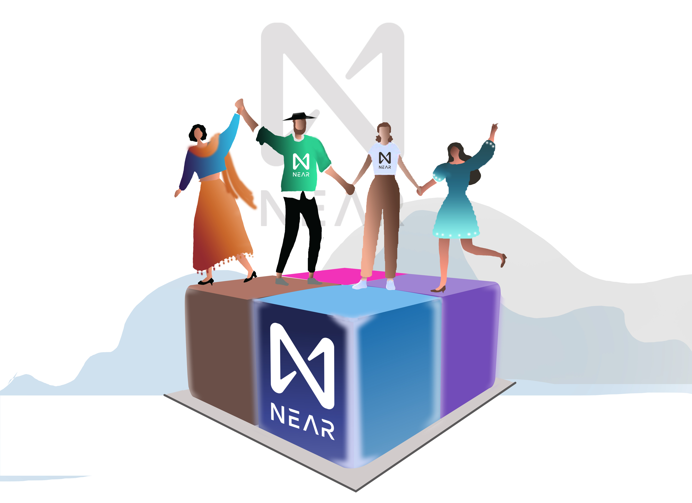
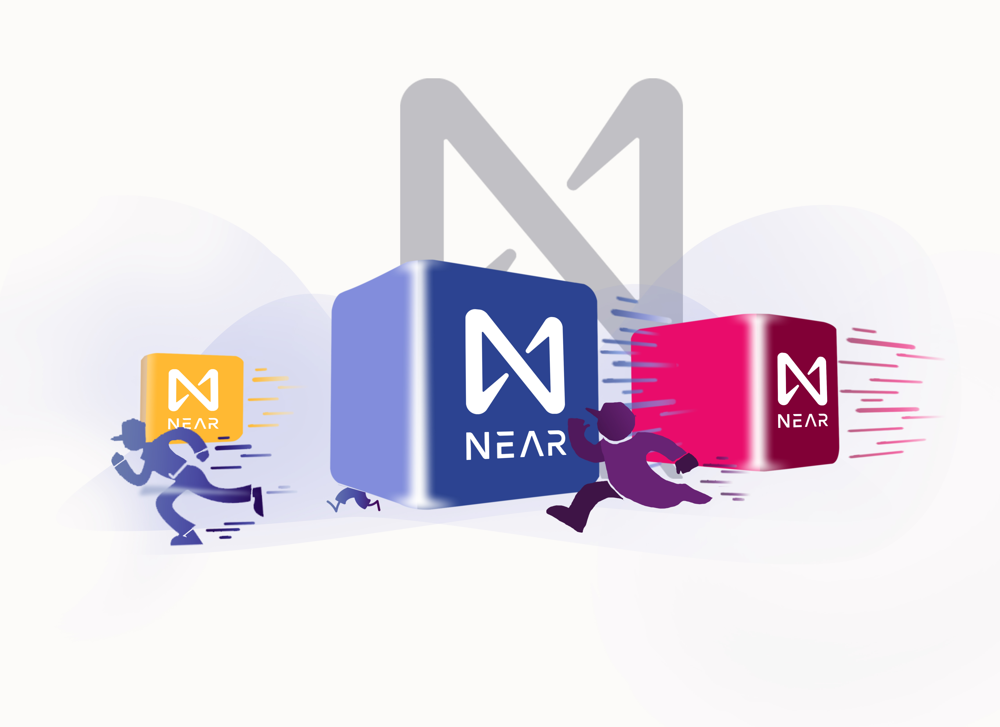
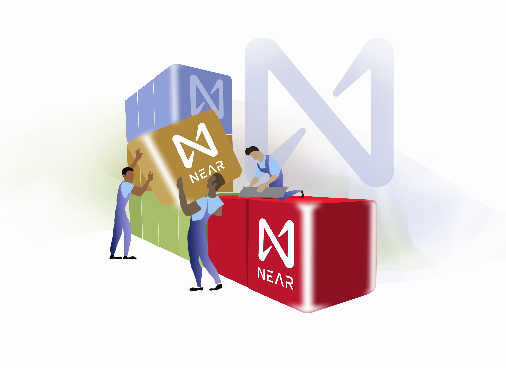
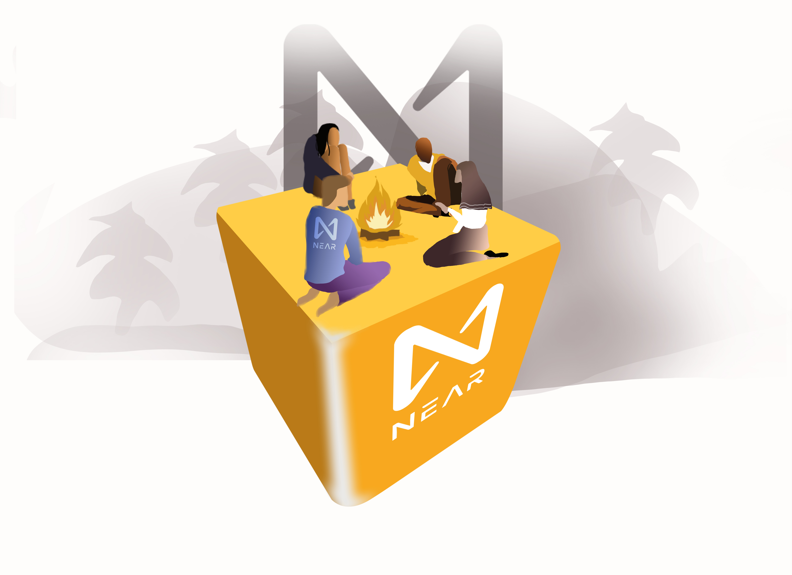

What Near is
NEAR is a decentralized development platform utilizing
developer-friendly, sharded, proof-of-stake
public blockchain that aspires to make it very easy for developers to build decentralized
applications (dapps). Dapps provide users with easy-to-use applications that guarantee the security
of high values assets like money and identity.
NEAR is building the infrastructure for the decentralized
web, including the NEAR Protocol Smart
Contract platform
plus a variety of other supporting tools. NEAR is a scalable
blockchain designed
to provide the performance and user
experience required to bridge the gaps in the mainstream
adoption of decentralized applications.
NEAR, unlike other next-generation
blockchain-based platforms, is built from the ground up, to be the easiest in the world for both
developers and their end-users, at the same time, providing the scalability and security needed to
serve those users. Specifically, NEAR's architecture makes it easier to:

Build decentralized applications, even if you are
only used to building with "traditional" web or
app concepts.
Onboard users with a smooth experience, even if you have never used crypto, tokens,
keys,
wallets,
or other blockchain artifacts.
Scale your application seamlessly - the underlying platform automatically expands
capacity via
sharding without additional costs or effort on your part.
How it work
NEAR provides a community-operated cloud-based infrastructure for deploying and running dapps by
combining the features of a decentralized database with a serverless computing platform. The NEAR
token, which allows this platform to run, also enables applications built on it to interact with
each other.

Together, these features allow developers to create censorship-resistant smart contracts for applications
that
deal with high-end data like money, identity, assets, and open-state components that need to interact
seamlessly with each other. The infrastructure which makes up this cloud is created
from a potentially
infinite number of "nodes" run by individuals and organizations who offer portions of
their CPU and hard drive
space — whether on a laptop or, more likely, professionally deployed servers.
These computers run the NEAR network in the background and as such, create a
decentralized network.
As mentioned, the NEAR community-run cloud is decentralized
so that updates must be accepted by a sufficient
majority of the network participants
or nodes. To ensure that the operators of nodes run the code well, they
participate
in a staking process called "Proof of Stake". In this process, they willingly put a portion
of
value at 'stake' as a deposit which they forfeit if it is established that they have
operated
inappropriately.
In essence, NEAR is providing a decentralized version of
the cloud-hosted services provided by Amazon or
Google.
from a potentially infinite number of "nodes" run by individuals and organizations
who offer portions of
their CPU and hard drive space — whether on a laptop or,
more likely, professionally deployed servers.
These computers run the NEAR
network in the background and as such, create a decentralized network.
As mentioned, the NEAR community-run cloud is decentralized so that
updates must be accepted by a
sufficient majority of the network
participants or nodes.
To ensure that the operators of nodes run the
code well, they
participate in a staking process
called "Proof of Stake". In this process, they willingly
put a
portion of value at 'stake' as a deposit which they forfeit if it is established that they have
operated inappropriately.
In essence, NEAR is providing a
decentralized version of the cloud-hosted services
provided by
Amazon or Google.

Why it is faster
The NEAR platform has been designed to be used in a permissionless way. However, a set of
community-built tools and reference guides have been created to help developers.
The NEAR team provides a set of straightforward command-line tools to enable developers to easily
create, test and deploy applications from their local environments.

NEAR also uses existing technology, Gitpod, to create zero time onboarding experience for
developers. Gitpod
provides an online "Integrated Development Environment"
(IDE), which NEAR customized to allow developers to
easily write, test and deploy
smart contracts from a web browser.
Very importantly, NEAR has the solutions for
scaling by eliminating the barriers to Web 3 adoption. With
high speeds, low fees,
and progressive UX, NEAR's climate-neutral blockchain is ready for explosive growth.
Also, NEAR is set for a multi-chain future, as it runs in concert with Ethereum,
Polkadot, Cosmos, and more,
allowing for the free flow of assets and communication
between networks for the betterment of all.
Why it is "greener" (more ecofriendly)
NEAR is greener because it utilizes climate-neutral blockchain technology.
Plus, it is the only protocol and
ecosystem built for mass adoption.
Every
single decision made is to unlock millions and billions of people
to join Open Web / Web3.
What can be done on it
On NEAR, you can:
Build decentralized apps on a developer-friendly platform that features low fees,
high speeds, and infinite
scalability.
Start up or grow up on a platform that sets you up for success.
Investors, partners, and users are waiting.
Belong to a community.
When you find your purpose, you find your people.
Pick a wallet, create an account,
and start contributing today.
Reimagine your world.
Through simple, secure, and scalable technology,
NEAR empowers millions to invent and explore new
experiences. Business, creativity, and community are
being reimagined for a more sustainable and
inclusive future.
Who can build on it
Developers can build on it. Development on the NEAR platform happens in two main categories:
·Smart Contracts (back-end)
·Applications (front-end)

Who is building on it
Projects are already taking advantage of NEAR's building experience. Flux Protocol, Mintbase, and
Zed.Run, amongst others, are leveraging NEAR's speed and low-cost development to grow their user
communities.
NEAR focuses on providing solutions to the two core problems of today's
blockchains — usability and
scalability. Usability for end-users is
achieved by providing a security model for wallet interactions and
giving developers more opportunities to create experiences that closely
resemble applications and
experiences the masses are familiar with.
Usability for developers is attained by setting up the protocol to allow
browser-based debugging, familiar
programming languages
(like AssemblyScript and Rust), and contract usage rebates or rewards.
Scalability is
made possible by sharding the chain into a potentially unlimited
number of subchains, each operating in
parallel.